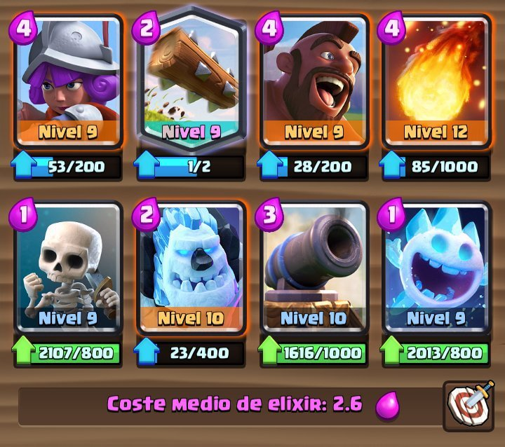
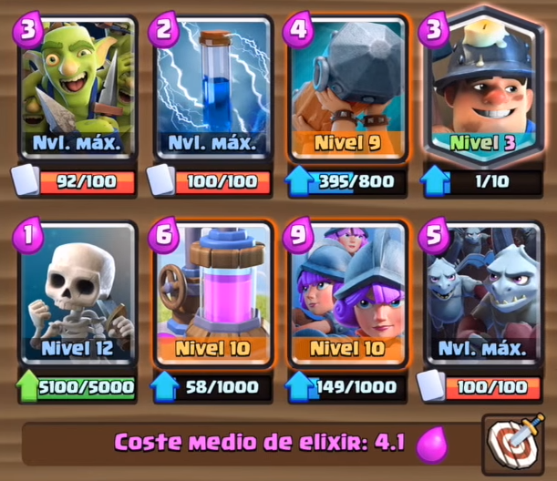
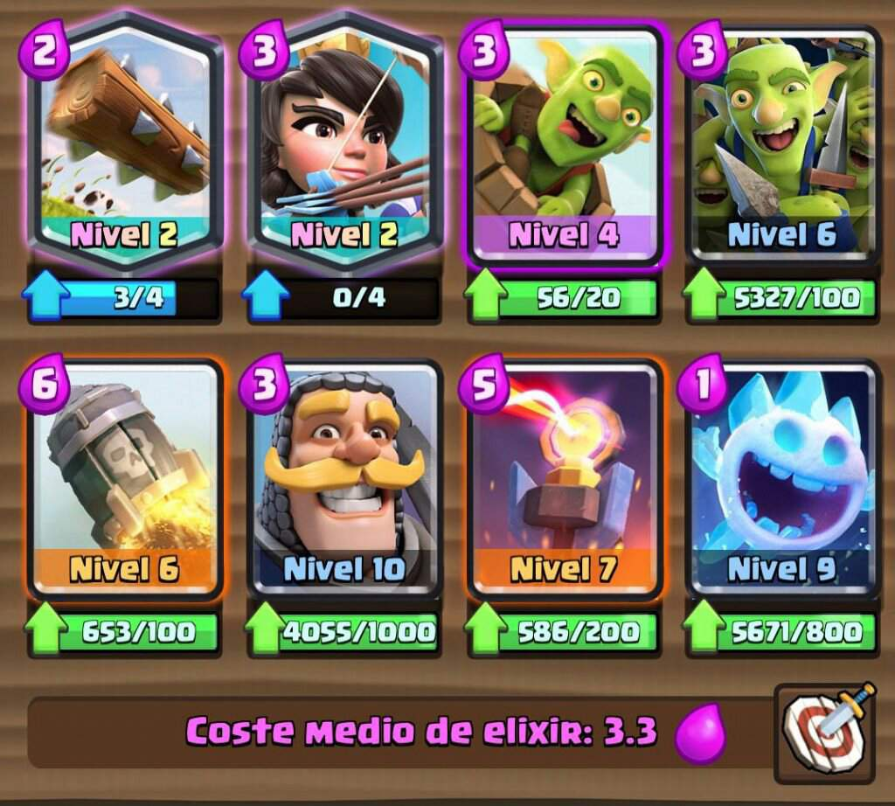
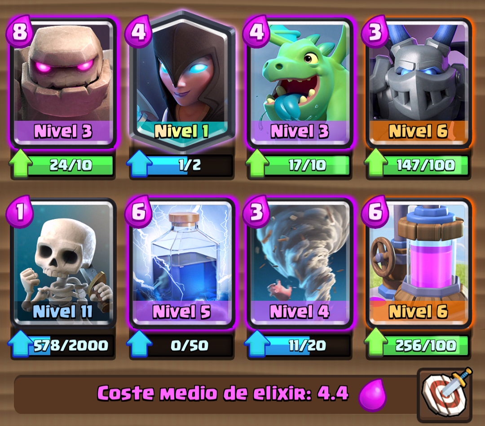

|  |
1. Ciclado de Montapuercos (2.6):
Cartas clave: Montapuercos, Espíritu de Hielo, Bola de Fuego. Razón: Este mazo es extremadamente económico y difícil de defender debido al rápido ciclo del Montapuercos. Es una opción sólida para jugadores que buscan un enfoque agresivo |
|  |
2. Triple Mosquetera con Ariete y Minero (4.1):
Cartas clave: Triple Mosquetera, Ariete de Batalla, Minero. Razón: La combinación de las Mosqueteras con el Ariete y el Minero crea una presión constante en ambas líneas. Además, el Minero puede distraer a las defensas enemigas, permitiendo que las Mosqueteras causen estragos |
|  |
3. Log Bait con Infierno (3.0):
Cartas clave: Barril de Duendes, Torre Infernal, Princesa. Razón: El mazo de Log Bait se centra en el ataque sorpresa con el Barril de Duendes. La Torre Infernal y la Princesa ayudan a controlar las defensas enemigas. Es un mazo versátil y efectivo |
|  |
4. Golem, Bruja Nocturna y Megaesbirro (4.3):
Cartas clave: Golem, Bruja Nocturna, Megaesbirro. Razón: Este mazo se basa en una fuerte ofensiva con el Golem como tanque principal. La Bruja Nocturna y el Megaesbirro proporcionan apoyo aéreo y terrestre, respectivamente |
 |
5. Fénix (Pandilla de Pillos - Cementerio):
Cartas clave: Pandilla de Pillos, Cementerio. Razón: Este mazo tiene una defensa sólida y un buen equilibrio de coste. Tanto en ataque como en defensa, es una opción poderosa |